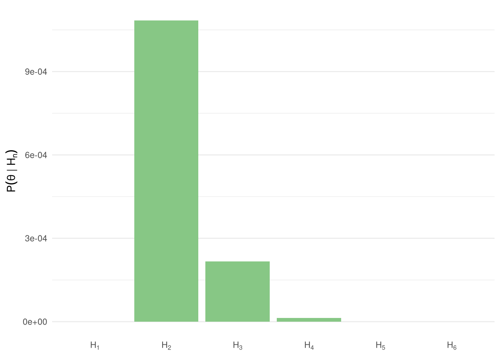

| Notacja | Wyjaśnienie |
|---|---|
| \(P(A)\) | Prawdopodobieństwo A |
| \(P(A \cap B)\) | Prawdopodobieństwo A i jednocześnie B |
| \(P(\text{grypa} \cap \text{szczepionka})\) | Prawdopodobieństwo, że ktoś i ma grypę, i się szczepił (odsetek takich osób w całej populacji) |
| \(P(A \mid B)\) | Prawdopodobieństwo A jeśli B (albo wśród spełniających warunek B) |
| \(P(\text{grypa} \mid \text{szczepionka})\) | Prawdopodobieństwo grypy jeśli się ktoś zaszczepił (odsetek zachorowań tylko wśród szczepionych) |
| \(P(\lnot A)\) | Prawdopodobieństwo, że nie A (czyli \(1 - P(A)\)) |
| \(P(\lnot \text{grypa})\) | Prawdopodobieństwo, że ktoś nie ma grypy (jest zdrowy, łączny odsetek zdrowych w populacji) |
| \(O(A)\) | Szansa na A, czyli na ile A jest bardziej prawdopodobne od alternatyw (\(\frac{P(A)}{P(\lnot A)}\)) |
Twierdzenie Bayesa i bayesowskie porównywanie hipotez
Statystyka
Matematyka
Bayes
Wyobraźmy sobie, że przychodzi do naszego gabinetu pacjent. Przeprowadzamy wywiad, stawiamy diagnozę i przypominamy sobie, że niedawno czytaliśmy niepokojącą statystykę – 30% ofiar przemocy wykształca to właśnie zaburzenie, podczas gdy w całej populacji występuje ono tylko u 10% ludzi. Czy należy przeprowadzić wywiad w tym kierunku? Jaka jest szansa, że pacjent rzeczywiście jest ofiarą przemocy? Chciałoby się powiedzieć, że jest 30% szans, ale jeśli tak by było, to z faktu, że 95% złodziei jest praworęczna, wynikałoby, że 95% praworęcznych to złodzieje. Jeśli chcemy „odwrócić prawdopodobieństwo” i wnioskować o doświadczeniu przemocy na podstawie diagnozy, musimy zastosować twierdzenie Bayesa.
Szybko ustalmy notację, tutaj tabela z definicjami i przykładami:
1 Szacowanie prawdopodobieństwa
Nie ukrywam, że moje wyjaśnienie jest w dużej mierze inspirowane animowanym dowodem wykonanym przez świetnego YouTube’owego twórcę 3blue1brown. Zresztą mogę się inspirować, te wpisy to dla mnie głównie notatki do siebie. Jeśli to czytasz i nie jesteś mną, pozdrawiam. Jeśli jesteś mną, to też pozdrawiam. Tak czy inaczej, warto ten filmik obejrzeć, żeby rzeczywiście te kwadraty, o których piszę niżej, zobaczyć.
Z danych przedstawionych w treści zadania wiemy, że 30% ofiar przemocy ma to zaburzenie. Z góry zaznaczam, że dane są kompletnie wymyślone. Pytanie o szansę, że nasz chory pacjent jest ofiarą przemocy, to pytanie jaka część chorych na tę chorobę to ofiary przemocy. Znamy odsetek chorych pośród ofiar, chcemy znać odsetek ofiar pośród chorych. Jeśli prawie wszyscy chorzy to ofiary przemocy, to nasz chorujący pacjent pewnie też był ofiarą. Jeśli ofiary przemocy nie chorują na tę chorobę, to nasz pacjent (skoro jest chory) pewnie też nie jest ofiarą przemocy. Jeśli nie ma zależności, tzn. odsetek ofiar przemocy jest taki sam w grupie chorych, jak i w grupie zdrowych, to nic nam informacja o chorobie nie powie.
Tutaj zostało nam powiedziane, że na tę chorobę choruje 10% całej populacji, ale aż 30% ofiar przemocy. Populacja składa się więc z czterech grup – chorujące ofiary przemocy, zdrowe ofiary przemocy, chorujące nie-ofiary przemocy i zdrowe nie-ofiary przemocy. Cztery prostokąty różnej wielkości. Chcemy wiedzieć, jaka część CHORUJĄCYCH to ofiary przemocy, więc musimy podzielić chorujące ofiary przemocy przez wszystkich chorujących. Tak się liczy procenty, procenty to ułamki, dlatego nie lubię uczenia ludzi procentów (tylko) za pomocą proporcji. Innymi słowy musimy wywalić oba prostokąty oznaczające ludzi zdrowych, z pozostałych dwóch ułożyć jedną figurę, i powiedzieć, jak duża część tej nowej figury to ofiary przemocy.
\[ P(\text{ofiara} \mid \text{choruje}) = \frac{\text{chorujące ofiary}}{\text{wszyscy chorzy}} = \frac{\text{ryzyko u ofiar} \times \text{odsetek ofiar}}{\text{wszyscy chorzy}} \]
Tę notację czytamy „prawdopodobieństwo, że osoba jest ofiarą, jeśli wiemy, że choruje”. Wiemy, że nasza nowa figura to łącznie 10%, bo tak zostało powiedziane w zadaniu. Co ważne – 10% wszystkich, nie tylko nie-ofiar, to jest suma chorujących ofiar i chorujących nie-ofiar. Pozostaje więc policzyć, ile jest chorujących ofiar. Tego nie wiemy, ale wiemy, że to 30% wszystkich ofiar.
Wszystkie ofiary to jest inny zestaw, wszystkie ofiary to chorujące ofiary + zdrowe ofiary. Ten zestaw to 3% całego dużego prostokąta, co również zostało nam dane w zadaniu. Wyobrażam sobie, że trzymam papierowy prostokąt o polu 3, który oznacza wszystkie ofiary. Odcinam nożyczkami 30% tego kawałka, oddzielając w ten sposób chorujące ofiary przemocy od zdrowych. Jakie pole ma ten odcięty kawałek? 30% z 3%, więc:
\[ 3\% \times 30\% = 0.03 \times 0.30 = 0.009 = 0.9\% \]
Chorujące ofiary przemocy stanowią 0.9% całego prostokąta. Odsuwam zdrowe ofiary przemocy, przysuwam chorujące nie-ofiary przemocy i w ten sposób mam przed sobą wszystkich chorujących w dwóch kawałkach, które w sumie stanowiły 10% dużego prostokąta. Najpierw oddzieliłem chorujących od innych ofiar przemocy, a potem połączyłem z resztą chorujących. Ponieważ reszta prostokąta mi zniknęła, pisanie o procentach może być mylące. Procent jest zawsze z czegoś i trzeba wiedzieć z czego, bo inaczej bardzo łatwo się pogubić. Wcześniej liczba 100% oznaczała cały prostokąt, a nowa figura to 10% całego prostokąta. Jaką część nowej figury stanowi moje 0.9%? Będzie to 0.9% w całości, która stanowi 10%, więc dzielę:
\[ \frac{0.9}{10} = 0.09 = 9\% \]
To są już nowe procenty. Odcięty przeze mnie fragment stanowił 0.9% całego dużego prostokąta, ale 9% mojej nowej figury. Innymi słowy chorujące na tę chorobę ofiary przemocy to 0.9% wszystkich ludzi, ale już 9% wszystkich chorujących.
To jest stała procedura, tzn. oddziel kawałek z jednej grupy, dołóż do reszty drugiej grupy i podziel pole kawałka przez łącze pole całości. Jeśli mam notację \(P(A \mid B)\), czyli prawdopodobieństwo A, jeśli wiem, że B, to najpierw muszę ze wszystkich A oddzielić tych, którzy jednocześnie należą do B, a potem podzielić przez wszystkich należących do B. To, co na lewo od pionowej kreski, muszę pociąć i podzielić przez to, co na prawo. Muszę więc umieć policzyć, ile mam A, którzy jednocześnie należą do B (np. 30% z 3%) oraz ile łącznie mam B (np. 10%). Czasem wiemy od razu, ile łącznie jest B, ale czasem trzeba to policzyć. W końcu B też jest w dwóch kawałkach, chorujące ofiary policzyliśmy, a czasem trzeba wprost policzyć chorujące nie-ofiary i dodać. Na przykład jeśli zamiast tamtych danych dostałbym informację, że 5% ludzi bez doświadczenia przemocy choruje, to żeby dostać całość B musiałbym policzyć 5% z 97% (wszyscy minus ogólny odsetek ofiar) i dodać do 0.9%, które policzyłem wcześniej. Potnij co po lewej i podziel przez to, co po prawej. Pionowa kreska nawet może się skojarzyć z kreską ułamkową, a że jest nadziana na sztorc, to A się trochę rozedrze, jak na nią skoczy.
I pro forma zapiszę to twierdzenie, ale muszę przyznać, że jak próbowałem je zrozumieć na literkach, a potem go używać, to wszytko mi się plątało. Forma graficzna i wyłożona przeze mnie wyżej logika z rozdzieraniem pozwoliły mi dopiero swobodnie korzystać ze wzoru. Polecam rzeczywiście najpierw wyrobić intuicję.
\[ P(A \mid B) = \frac{P(A \cap B)}{P(B)} = \frac{P(B \mid A) \times P(A)}{P(B)} \]
Nieco przyjemniejsze jest w formie równości iloczynów:
\[ P(A \mid B) \times P(B) = P(B \mid A) \times P(A) \]
W tej postaci mogę je odnieść do interpretacji graficznej. Czytam je tak: przypadki A w grupie B to ta sama część całej populacji co przypadki B w grupie A. Graficznie to ma sens, bo to jest ten sam kawałek naszego kwadratu, tylko po lewej rozumiany jako „z całości B odcinam A”, a po prawej „z całości A odcinam B”. Ładnie to pokazuje grafika z Among Us z angielskiej Wikipedii.

2 Aktualizowanie pewności
Początkowo uznaliśmy więc, że ryzyko, że nasz pacjent rzeczywiście jest ofiarą przemocy, wynosi 3%. Był to nasz najlepszy strzał, bo tyle wynosi odsetek ofiar przemocy w populacji (a przynajmniej tak wymyśliłem do zadania). Innymi słowy szansa wyniosła 3:97 – 3 ofiary przemocy na każde 97 osób, które miały szczęście nimi nie być. Matematycznie szansa to właśnie stosunek prawdopodobieństwa prawdy do fałszu, wyników pozytywnych do negatywnych itd. Mówi nam, jak bardziej lub mniej prawdopodobny jest wynik pozytywny od negatywnego (jakkolwiek je zdefiniujemy). Nasze 3% nazwiemy prawdopodobieństwem a priori (ang. prior).
Trzeba zwrócić uwagę, że licznik w naszym równaniu, tj. ten pocięty pasek prawdopodobieństwa, liczymy poprzez przemnożenie tego ogólnego prawdopodobieństwa a priori (\(P(A)\)) przez odsetek A spełniający warunek B (\(P(B \mid A)\)). Że całe \(P(B)\) (czyli wszyscy spełniający warunek B, a więc suma spełniających warunek A i niespełniających warunku A, dodane pocięte kawałki) wynosi mniej niż 100% (w naszym przykładzie 10%), to ciężko mówić o prawdopodobieństwie, bo ono musi sumować się do 100%, jeśli wyczerpuje wszystkie możliwości (a tutaj wyczerpuje). Dlatego dzielimy nasz iloczyn przez \(P(B)\) i mamy prawdopodobieństwo.
Wynikiem tego działania było u nas 9% – tak powinniśmy szacować prawdopodobieństwo, że nasz pacjent był ofiarą przemocy, jeśli wiemy, że wykazuje to szczególne zaburzenie. To zaktualizowane oszacowanie nazywamy prawdopodobieństwem a posteriori (ang. posterior). Dane zmuszają nas do aktualizacji naszego oszacowania. Innymi słowy, szanse wzrastają z 3:97 do 9:91 (0,031 do 0,099).
3 Czynnik Bayesa
Możemy też porównać względne ryzyko. 30% ofiar przemocy wykształca to zaburzenie, a w całej populacji dotyka ono 10%. Cała populacja to zarówno ofiary, jak i nie-ofiary. Możemy policzyć, jaką u jakiej części nie-ofiar pojawia się to zaburzenie. Nie-ofiary stanowią 97% całej populacji i 91% populacji cierpiących na to zaburzenie (bo 9% to ofiary). Także odłączam grupę chorujących nie-ofiar od grupy wszystkich chorujących (\(10\% \times 91\% = 9.1\%\)) i liczę, jaka to część wszystkich nie-ofiar (\(\frac{9.1}{97} = 9.4\%\)).
Czyli ofiary przemocy mają 30% ryzyka, że wykształcą to zaburzenie, a osoby, które nie doświadczyły przemocy, zaledwie 9.4%. Czyli procentowe ryzyko jest u ofiar przemocy
\[ K = \frac{30}{9.4} = 3.19 \]
…razy większe niż u nie-ofiar. Porównajmy też, ile razy wzrastają szanse, w momencie postawienia diagnozy – nie prawdopodobieństwo, a szanse. Jak pisałem wyżej, szanse wzrastają wtedy z 3:97 do 9:91, a więc:
\[ BF = \frac{9:91}{3:97} \approx 3.19 \]
Ten sam wynik nie jest przypadkowy – stosunek szans a posteriori do a priori będzie taki sam, jak iloraz ryzyk między tymi grupami. Liczba ta nazywa się czynnikiem Bayesa (Bayes factor).
Obie perspektywy pozwalają nam znaleźć nasz \(BF\), a jest on o tyle użyteczny, że występuje zależność a priori × BF = a posteriori (skoro \(BF = \frac{\text{szanse a posteriori}}{\text{szanse a priori}}\)). Czynnik Bayesa pokazuje potencjalnie ważny efekt, ale nie należy go mylić z prawdopodobieństwem a posteriori – w momencie, kiedy postawiliśmy diagnozę, nasze oszacowanie szansy wzrosło ponad trzykrotnie, ale prawdopodobieństwo ciągle wynosi 9%. Wynika to z faktu, że bycie ofiarą jest rzadkie samo z siebie. Ostatecznie więc możemy wskazać na dwa równoważne wzory na BF:
\[ BF = \frac{\text{szanse a posteriori}}{\text{szanse a priori}} \]
oraz
\[ BF = \frac{P(B \mid A)}{P(B \mid \lnot A)} \]
gdzie B to choroba, a A to bycie ofiarą przemocy. Dowód na równoważność tych wzorów poniżej.
WskazówkaDowód: aktualizacja szans za pomocą ilorazu wiarygodności
Niech \((A)\) oznacza rozważane zdarzenie lub hipotezę, a \((B)\) zaobserwowaną informację.
Prawdopodobieństwo zdarzenia zapisujemy jako \((P(A))\), natomiast jego szanse definiujemy jako:
\[ \operatorname{O}(A) := \frac{P(A)}{P(\neg A)}. \]
Analogicznie szanse a posteriori, czyli szanse zdarzenia \((A)\) po zaobserwowaniu \((B)\), wynoszą:
\[ \operatorname{O}(A \mid B) := \frac{P(A \mid B)}{P(\neg A \mid B)}. \]
Z twierdzenia Bayesa:
\[ P(A \mid B) = \frac{P(B \mid A)P(A)}{P(B)}. \]
Analogicznie dla zdarzenia przeciwnego:
\[ P(\neg A \mid B) = \frac{P(B \mid \neg A)P(\neg A)}{P(B)}. \]
Dzieląc pierwsze równanie przez drugie, otrzymujemy:
\[ \frac{P(A \mid B)} {P(\neg A \mid B)} = \frac{ \dfrac{P(B \mid A)P(A)}{P(B)} }{ \dfrac{P(B \mid \neg A)P(\neg A)}{P(B)} }. \]
Po skróceniu wspólnego czynnika \((P(B))\):
\[ \frac{P(A \mid B)} {P(\neg A \mid B)} = \frac{P(B \mid A)P(A)} {P(B \mid \neg A)P(\neg A)}. \]
Rozdzielamy iloczyny:
\[ \frac{P(A \mid B)} {P(\neg A \mid B)} = \frac{P(A)} {P(\neg A)} \cdot \frac{P(B \mid A)} {P(B \mid \neg A)}. \]
Korzystając z definicji szans, dostajemy:
\[ \operatorname{O}(A \mid B) = \operatorname{O}(A) \cdot \frac{P(B \mid A)} {P(B \mid \neg A)}. \]
Po podzieleniu obu stron przez \((\operatorname{O}(A))\):
\[ \boxed{ \frac{\operatorname{O}(A \mid B)} {\operatorname{O}(A)} = \frac{P(B \mid A)} {P(B \mid \neg A)} } \]
Oznacza to, że stosunek szans a posteriori do szans a priori jest równy ilorazowi wiarygodności informacji \((B)\) przy założeniu \((A)\) i \((\neg A)\).
4 Bayesowskie porównywanie hipotez
Ten stosunek ma zaskakująco duże możliwości, jeśli uznamy go za rodzaj porównania hipotez. Co mam na myśli? Zaobserwowaliśmy, że nasz pacjent cierpi na to konkretne zaburzenie. Możemy postawić dwie hipotezy:
\[ H_0: \text{Pacjent nie był ofiarą przemocy} \\ H_1: \text{Pacjent był ofiarą przemocy} \]
Pytanie brzmi – która z tych hipotez lepiej przewiduje dane? W każdej z tych hipotez jest zaszyte prawdopodobieństwo choroby. Choroba wystąpiła. Która z tych hipotez bardziej pasuje do naszych obserwacji? Jak bardzo lepiej? To jest zupełnie inna logika testowania hipotez niż w klasycznej statystyce. Klasyczna statystyka zakłada, że istnieje jakaś prawdziwa wartość parametru, a dane, które otrzymaliśmy, to zaszumione odbicie tej prawdziwej wartości. Jak to napisałem, przyszło mi do głowy określenie „statystyka platońska”. W perspektywie bayesowskiej to dane są prawdziwe (w końcu się wydarzyły!), a różne wartości parametrów (tj. różne hipotezy) mają konkurować, która najlepiej je wyjaśnia. Która z tych hipotez daje większe prawdopodobieństwo uzyskania dokładnie takich danych?
\[ BF_{10} = \frac{P(B \mid H_1)}{P(B \mid H_0)} \]
Ponieważ \(H_1\) to u nas po prostu bycie ofiarą, czyli \(A\), a \(H_0\) to niebycie ofiarą, czyli \(\neg A\), to jest to po prostu czynnik Bayesa! Piszemy \(BF_{10}\) bo porównujemy \(H_1\) względem \(H_0\). Ponieważ w naszym przykładzie \(BF \approx 3.2\), to porównanie tych dwóch hipotez wskazuje, że nasze dane są ponad trzykrotnie bardziej prawdopodobne przy \(H_1\) niż przy \(H_0\).
Nie należy się jednak spieszyć z przyjmowaniem takiej hipotezy. I tak, piszę o przyjmowaniu, bo statystyka bayesowska pozwala nam rzeczywiście przyjąć hipotezę alternatywną zamiast tylko odrzucać hipotezę zerową. Mimo że nasza hipoteza alternatywna przewiduje dane ponad trzykrotnie lepiej, to trzeba wziąć pod uwagę, że wyjściowe prawdopodobieństwo bycia ofiarą przemocy wynosi w naszym zadaniu 3%. Jest to zjawisko ciągle stosunkowo rzadkie. Zastosowanie tego czynnika pozwala nam oszacować rzeczywiste prawdopodobieństwo, że pacjent jest ofiarą – liczyliśmy je wyżej i wynosi 9%. Najważniejszym źródłem dla naszych decyzji jest właśnie ta liczba – prawdopodobieństwo a posteriori. 9% że jest ofiarą do 91%, że nią nie jest. Kiedy więc bierzemy pod uwagę prawdopodobieństwo a priori, hipoteza, że pacjent nie jest ofiarą przemocy, jest ciągle 10 razy bardziej prawdopodobna.
Jednak czynnik Bayesa ma tę przyjemną właściwość, że nawet jak się okaże, że odsetek ofiar przemocy jest w społeczeństwie inny niż zakładaliśmy (wyższy albo niższy), to dopóki ryzyko zachorowania u ofiar będzie 30% a u nie-ofiar 9.4%, wartość BF się nie zmieni. Innymi słowy prawdopodobieństwo a priori może zostać zaktualizowane, ale szanse a posteriori to ciągle szanse a priori × BF. Prawdopodobieństwo a priori może zmienić się nie tylko dlatego, że zaktualizuje się oszacowanie powszechności przemocy w populacji. Nasze wstępne oszacowanie dla tego pacjenta może się zmienić też dlatego, że zbieramy różne poszlaki na temat tej konkretnej osoby. Dla tego pacjenta możemy szacować prawdopodobieństwo bycia ofiarą przemocy na wejściu nawet na 10%, na podstawie naszego doświadczenia. Przy takim oszacowaniu szanse a posteriori wyniosą:
\[ O(\text{ten pacjent doświadczył przemocy} \mid \text{zaburzenie}) = \\ O(\text{szanse a priori}) \times BF_{10} = \\ \frac{1}{9} \times 3.2 = \frac{16}{45} \]
…a więc prawdopodobieństwo wyniesie:
\[ P(\text{ten pacjent doświadczył przemocy} \mid \text{zaburzenie}) = \\ \frac{16}{45 + 16} \approx 26\% \]
W ten sposób dowody za i przeciw kumulują się, by dostarczyć nam sensownego oszacowanie ryzyka. W tym prostym przykładzie można to prawdopodobieństwo policzyć na kartce, ale przy prawdziwych hipotezach badawczych, gdzie możemy mieć ciągłe rozkłady, wiele parametrów itd. sposób liczenia prawdopodobieństwa a posteriori szybko robi się bardziej skomplikowany, chociaż jego logika jest taka sama.
Powinniśmy więc taką hipotezę przyjąć czy odrzucić? Piękno statystyki bayesowskiej na tym polega dostaliśmy nasze prawdopodobieństwo – 9%. Mnie taki poziom pewności nie satysfakcjonuje, ale każe zachować ostrożność. Koszty pomyłki mogą być bowiem bardzo duże. Jeśli uda nam się je skwantyfikować, możemy je włączyć do równania i wziąć matematycznie ująć to, że preferujemy konkretny rodzaj błędu, bo wiąże się z mniejszymi kosztami. Ostatecznie prawdopodobieństwo a posteriori mocno zależy od prawdopodobieństwa a priori, ale istnieją zgrubne reguły interpretowania BF samego w sobie, jako siły argumentu. Im większa siła argumentu, tym większy sceptycyzm pokona. I odwrotnie, im większy sceptycyzm, tym silniejszych dowodów potrzeba. W tabelce klasyczne reguły interpretacji BF (Jeffreys, 1998), które jednak trzeba traktować bardzo zgrubnie, bo to jednak modyfikator prawdopodobieństwa a priori. Najprostsza reguła to wybrać tę hipotezę, która ma więcej niż 50% prawdopodobieństwa.
| BF | Interpretacja |
|---|---|
| < 1 | Odwróć ułamek i sprawdź jeszcze raz |
| 1 | Brak dowodów, posterior wygląda jak prior |
| 1-3 | Dowody słabe, anegdotyczne |
| 3-10 | Dowody umiarkowane |
| 10-30 | Dowody silne |
| 30-100 | Dowody bardzo silne |
| > 100 | Dowody ekstremalnie silne |
5 Przyjęcie hipotezy zerowej
Statystyka bayesowska pozwala na jeszcze jedną rzecz, która w klasycznej statystyce jest niemożliwa, a której często bardzo potrzebujemy, więc udajemy, że da się to zrobić na podstawie wartości p. Statystyka bayesowska pozwala nam przyjąć hipotezę zerową. Nie jej nie odrzucać, tylko rzeczywiście ją przyjąć.
Widziałem już plakaty czy wystąpienia, gdzie badacz uzyskał coś w rodzaju \(p = 0.625\) i interpretował to tak, jakby było 62.5% szans, że hipoteza zerowa jest prawdziwa. W końcu nie mogę jej odrzucić, więc uznaję, że efektu nie ma! Dokładnie tego samego uczymy studentów, jak pokazujemy im testy normalności rozkładu, mieszając im przy okazji mocno w głowach. Mówimy im wtedy „Jeśli macie \(p > 0.05\), to zakładacie, że mamy normalność”, a potem kiedy interpretują już swoje właściwe wyniki, tłuczemy im do głów, że hipotezy zerowej nie da się przyjąć. Gdzie de facto przecież to tutaj robimy, jak udajemy, że \(p > 0.05\) to dowód na rzecz normalności. Ba, jak wychodzi \(p = 0.06\), czyli tylko 6% szans, że pod hipotezą zerową powstałyby takie dane, to jeśli to test normalności, to mówimy im „nie odrzucamy hipotezy zerowej, zakładamy więc normalność” (znowu – przecież tak nie wolno!), a jak takie samo \(p\) wyjdzie im w regresji, to mówimy im, żeby pisali, że wyniki są „istotne na poziomie trendu” i pisali dyskusję tak, jakby były prawdziwe, tylko użyli ostrożniejszego ryzyka. A jaka jest szansa, że ten wynik jest prawdziwy? Jak wypada hipoteza alternatywna na tle zerowej? Nie wiemy, nie liczymy tego, a moglibyśmy, jakbyśmy ustalili sensowny prior i wyliczyli BF.
Jak działa przyjmowanie hipotezy zerowej? Tak samo jak przyjmowanie hipotezy alternatywnej. Jeśli \(BF_{10}\) ma wartość mniejszą od 1, to ją odwracamy. Dostajemy wtedy \(BF_{01}\) czyli miarę, ile razy bardziej prawdopodobne są nasze dane pod \(H_0\) w porównaniu do \(H_1\). Potem wyliczamy prawdopodobieństwo a posteriori i interpretujemy. Zobaczymy to w kolejnym przykładzie.
6 Drugi przykład
Wybrałem powyższy przykład z powikłaniami po doświadczeniu przemocy, bo wydaje mi się dobrze pokazywać, że nawet taka dość abstrakcyjna na pierwszy rzut oka matematyka może mieć praktyczne zastosowanie w pracy psychologa nie tylko naukowca. Plus naprawdę kiedyś liczyłem dokładnie takie zadanie dla podparcia swojego argumentu i wtedy zrozumiałem twierdzenie Bayesa. Co zabawne, prawdopodobieństwo a posteriori uparcie wychodziło mi w okolicach 150%. Rzecz niemożliwa, więc 15 razy sprawdzałem czy na pewno nie pomieszałem procentów, oznaczeń i wszystkich innych elementów. Potem dopiero się zorientowałem, że według sprawdzanych przeze mnie danych, osób wykształcających zaburzenie po przemocy jest więcej niż wszystkich osób z tym zaburzeniem łącznie. Kiedy już go zrozumiałem, bardzo mnie ten wniosek ucieszył, bo pozwolił mi elegancko podważyć te dane. Mogłem powiedzieć, że jeśli te dane byłyby prawdziwe, to w populacji musiałoby być znacznie więcej osób z tym zaburzeniem, niż jest w rzeczywistości. Dziś pewnie potraktowałbym te dane jak hipotezę i próbował liczbowo wyrazić, jak bardzo jest nieprawdopodobna. Teraz przejdźmy do innego przykładu.
Wyobraźmy sobie szybki test na grypę, który poprawnie wykrywa zakażenie u 70% chorych, ale daje też wynik fałszywie pozytywny u 1% zdrowych. Aktualnie zakażone jest 5% populacji. Rozpatrzmy dwa przypadki – Adam widzi wynik pozytywny, Ewa negatywny. Zadanie polega na tym, żeby ustalić, jakie jest prawdopodobieństwo, że Adam i Ewa mają grypę.
6.1 Adam – wynik pozytywny
6.1.1 Metoda 1: z twierdzenia Bayesa
Musimy policzyć, z jakim prawdopodobieństwem Adam ma grypę, biorąc pod uwagę, że wyszedł mu wynik pozytywny. Innymi słowy jak częsta jest grypa wśród ludzi z wynikiem pozytywnym. Zapiszemy to jako \(P(\text{grypa} \mid +)\). Prawdopodobieństwo a priori wynosi \(P(\text{grypa}) = 5\%\). Zgodnie z naszą procedurą, najpierw rozcinamy zbiór ludzi z grypą tak, żeby dowiedzieć, jaka część populacji to zakażeni z wynikiem pozytywnym. Zakażonych jest 5%, a 70% spośród nich ma wynik pozytywny, więc mnożę:
\[ P(\text{grypa}) \times P(+ \mid \text{grypa}) = 0.05 \times 0.70 = 0.035 \]
Teraz muszę to przeskalować, żeby się dowiedzieć, jaka to część wszystkich ludzi z wynikiem pozytywnym. Na grupę ludzi z wynikiem pozytywnym składają się chorzy i zdrowi. Dostaliśmy informację, że 1% zdrowych otrzyma wynik pozytywny, a zdrowych jest 95%. Mnożymy więc:
\[ P(\text{brak grypy}) \times P(+ \mid \text{brak grypy}) = 0.95 \times 0.01 = 0.0095 \]
Policzyliśmy więc, że wynik chorzy z wynikiem pozytywnym to 3.5% całej populacji, a zdrowi z wynikiem pozytywnym to 0.95% całej populacji. Oznacza to, że wynik pozytywny uzyskałoby:
\[ P(+) = 3.5\% + 0.95\% = 4.45\% \]
…całej populacji. Odpowiedzmy sobie wreszcie – jaką część ludzi z wynikiem pozytywnym stanowią rzeczywiście chorzy? 3.5% z 4.45%, więc:
\[ P(\text{grypa} \mid +) = \frac{P(\text{grypa}) \times P(+ \mid \text{grypa})}{P(+)} = \frac{3.5}{4.45} \approx 0.7865 = 78.65\% \]
Adam jest więc chory na 79%, czyli znacznie więcej niż początkowe 5%. To jest nasze prawdopodobieństwo a posteriori.
6.1.2 Metoda 2: BF i a posteriori przez BF
Mogliśmy policzyć to też na inny sposób. Wiemy, że \(BF\) zmienia szanse a priori w szanse a posteriori. Znamy też wzór na \(BF\), gdzie porównujemy prawdopodobieństwo obserwacji danych (tj. pozytywnego wyniku testu) w dwóch hipotezach – że Adam nie ma grypy (\(H_0\)) i że ją ma (\(H_1\)). Prawdopodobieństwo wyniku pozytywnego w grypie zostało dane w zadaniu i wynosi \(P(+ \mid \text{grypa}) = 70\%\). A jak ktoś nie ma grypy? To też zostało dane w zadaniu, \(P(+ \mid \text{brak grypy}) = 1\%\). Policzmy z tego \(BF_{10}\):
\[ BF_{10} = \frac{P(+ \mid \text{grypa})}{P(+ \mid \text{brak grypy})} = \frac{0.7}{0.01} = 70 \]
Pojawienie się wyniku pozytywnego jest 70 razy bardziej prawdopodobne, jeśli ta grypa jest, niż jak jej nie ma. Coś takiego można było zauważyć od razu, w końcu to jest 1% vs 70%. To jest bardzo silny dowód grypy. Co prawda już policzyliśmy prawdopodobieństwo a posteriori, ale mając BF możemy je uzyskać nawet łatwiej. Najpierw przeliczmy prawdopodobieństwo a priori na szanse. Ono wynosiło \(P(\text{grypa}) = 5\%\) Szansa, czyli stosunek wyniku pozytywnego do negatywnego, wynoszą więc:
\[ O(\text{grypa}) = \frac{5}{95} = \frac{1}{19} \approx 0.053 \]
Na wejściu brak grypy jest więc 19 razy bardziej prawdopodobny niż grypa. Przeskalujmy to teraz wykorzystując BF:
\[ O(\text{grypa} \mid +) = O(\text{grypa}) \times BF_{10} = \frac{1}{19} \times 70 = \frac{70}{19} \approx 3.68 \]
Szansa wzrasta 70-krotnie i a posteriori grypa jest prawie cztery razy bardziej prawdopodobna niż jej brak. Przeliczmy to na prawdopodobieństwo:
\[ P(\text{grypa} \mid +) = \frac{70}{19 + 70} = \frac{70}{89} \approx 0.7865 = 78.65\% \]
Identycznie jak bezpośrednio z twierdzenia Bayesa.
6.2 Ewa – wynik negatywny
Teraz co z Ewą? Ewa zobaczyła wynik negatywny, ale ciągle się martwi, bo wie, że szybkie testy bywają niedokładne. Jakie jest więc prawdopodobieństwo, że mimo to jest chora? Przypomnijmy, prawdopodobieństwo a priori wynosi 5%. Najbardziej będzie nas tutaj interesował czynnik Bayesa, ale pro forma policzmy a posteriori też z twierdzenia Bayesa.
6.2.1 Metoda 1: twierdzenie Bayesa
\[ P(\text{grypa} \mid -) = \frac{P(- \mid \text{grypa}) \times P(\text{grypa})}{P(-)} \]
Skoro w grypie mam 70% szans na wynik pozytywny, to mam automatycznie 30% na wynik negatywny. Ponieważ chorych jest 5%, mogę od razu obliczyć licznik, czyli odsetek chorych z wynikiem negatywnym w całej populacji:
\[ P(- \cap \text{grypa}) = P(- \mid \text{grypa}) \times P(\text{grypa}) = \\ 0.3 \times 0.05 = 0.015 = 1.5\% \]
Zdrowi (95% populacji) mają 99% prawdopodobieństwa uzyskania wyniku negatywnego (bo tylko 1% wyników jest fałszywie pozytywnych), więc zdrowych z wynikiem negatywnym w całej populacji jest:
\[ P(- \cap \text{brak grypy}) = P(- \mid \text{brak grypy}) \times P(\text{brak grypy}) = \\ 0.99 \times 0.95 = 0.9405 = 94.05\% \]
Cała populacja to zdrowi i chorzy, więc łączne prawdopodobieństwo zobaczenia wyniku negatywnego to suma tego prawdopodobieństwa u zdrowych i chorych:
\[ P(-) = 0.015 + 0.9405 = 0.9555 = 95.55\% \]
Mogliśmy to zrobić mądrzej, jeślibyśmy pamiętali, że ogólne prawdopodobieństwo wyniku pozytywnego to \(P(+) = 4.45\%\), bo przez to \(P(-) = 100\% - 4.45\% = 95.55\%\). Także jaką część wszystkich wyników negatywnych stanowią wyniki fałszywie negatywne?
\[ P(\text{grypa} \mid -) = \frac{P(\text{grypa} \cap -)}{P(-)} = \frac{0.015}{0.9555} = \frac{10}{637} \approx 1.57\% \]
Ewa ma więc 1.57% prawdopodobieństwa, że jest chora, czyli mniej niż poprzednie 5%. W języku szans, szansa na chorobę jest jak 10:637, albo też jest prawie 63 razy bardziej prawdopodobne, że jest zdrowa.
6.2.2 Metoda 2: BF i a posteriori przez BF
Porównujemy prawdopodobieństwo, że Ewa jest zdrowa do prawdopodobieństwa, że jest chora, a więc prawdopodobieństwo uzyskania wyniku negatywnego (bo to są nasze dane) w zdrowiu i w chorobie (w radości i smutku, w bogactwie i ubóstwie). Wypiszmy hipotezy wprost:
\[ H_0: \text{Ewa jest zdrowa} \\ H_1: \text{Ewa jest chora} \]
Jak ktoś jest chory, to zobaczy wynik negatywny w \(P(- \mid H_0) = 30\%\) przypadków, a jak jest zdrowy, w \(P(- \mid H_1) = 99\%\) przypadków. Czynnik Bayesa porównuje \(H_1\) względem \(H_0\):
\[ BF_{10} = \frac{P(- \mid H_1)}{P(- \mid H_0)} = \frac{0.3}{0.99} = \frac{10}{33} \approx 0.3 \]
To nie jest prawdopodobieństwo! To jest czynnik Bayesa, czyli jak zmieniło się nasze oszacowanie prawdopodobieństwa po teście. Szanse a priori możemy przemnożyć przez tę właśnie liczbą, a mnożenie przez ułamki między 0 a 1 sprawia, że liczba robi się mniejsza. \(H_0\) lepiej przewiduje dane niż \(H_1\). Możemy więc odwrócić ten ułamek, żeby wiedzieć, ile razy lepiej.
\[ BF_{01} = \frac{P(- \mid H_0)}{P(- \mid H_1)} = \frac{0.99}{0.3} = \frac{33}{10} = 3.3 \]
Sam z siebie taki współczynnik oznacza umiarkowany dowód, ale trzeba wziąć pod uwagę, że wstępna szansa na bycie zdrowym to 95:5 (19:1)! Nasz czynnik Bayesa tylko zwiększa te szanse do:
\[ O(\text{brak grypy} \mid -) = \frac{19}{1} \times 3.3 = \frac{62.7}{1} \]
Zdrowie jest dla Ewy 62.7 bardziej prawdopodobne niż choroba (a właściwie brak grypy niż grypa). Konkretne prawdopodobieństwo grypy, co już policzyliśmy metodą pierwszą, to zaledwie:
\[ P(\text{grypa} \mid -) = 1 - \frac{62.7}{63.7} = 1.57\% \]
Ewa może mieć 98.4% pewności, że nie ma grypy.
7 Aktualizacja priorów
Można się zapytać, dlaczego Ewa w ogóle robiła test, skoro już na wejściu miała 95% pewności, że jest zdrowa. Zdrowi ludzie zazwyczaj nie robią testów na grypę dla pewności. Ewa może uznać, że 5% to mało, bo jest sezon grypowy i co najmniej 15% populacji ma grypę. Ewa w ten sposób podważa nasze oszacowane prawdopodobieństwo a priori. Ba, nie musi odnosić się do rozpowszechnienia grypy w populacji. Może stwierdzić, że czuje się słabo i zaczyna ją boleć gardło. Ostatecznie, ważąc wszystkie za i przeciw, Ewa może oszacować szanse, że ma grypę na 40 do 60 (2:3).
Statystyka klasyczna nie ma dla Ewy odpowiedzi. Nie da się jej odnieść do jednostki, pozwala wyciągnąć tylko wnioski populacyjne. Trzeba by było przeszukać literaturę i znaleźć układ tych objawów, oszacować parametry i zrobić setkę innych rzeczy, które pozwolą nam oszacować wstępne prawdopodobieństwo, że Ewa ma grypę. A potem do modelu trzeba by było dorzucić jeszcze fakt, że test wyszedł negatywny i po poradzeniu sobie z nieuchronną współliniowością, dostalibyśmy jakieś oszacowanie ryzyka, w które Ewa i tak by nie uwierzyła, bo nie bierze pod uwagę faktu, że Adam ma grypę. Nie mówiąc już o tym, że Ewa zna swój organizm na sposoby, których masowe badania nie ujmą. Każdy z nas naprawdę potrafi coś o sobie powiedzieć, lekarz (jak i psycholog) też przeprowadza wywiad i stawia indywidualną diagnozę na podstawie doświadczeń. Owszem, ludzie różnią się adekwatnością tych założeń, ale nie sprawia to, że powinniśmy je z gruntu odrzucać – nie ma ogólnego powodu, żeby uznać, że Ewa nie wie o czym mówi, jak stwierdza, że na 40% ma grypę. Statystyka bayesowska posiada jednak szczególną moc, żeby dać Ewie jakieś wnioski niezależnie od tego w jaki sposób i na ile oszacowała wstępne prawdopodobieństwo.
Zauważmy, że czynnik Bayesa oszacowaliśmy na podstawie parametrów testu – prawdopodobieństwo wyniku negatywnego przy chorobie i przy braku choroby, podzielone przez siebie. Jeśli Ewa nie podważa proporcji wyników prawdziwie i fałszywie negatywnych, to wartość \(BF\) się nie zmienia. Inne czynniki mogą szanse podwyższać (ból gardła, chory mąż) i obniżać (szczepienie, brak gorączki) w oszacowaniu Ewy, ale \(BF\) pozostaje stały. \(BF\) to skalar szans, tzn. niezależnie jakie te szanse są, BF zmienia je w przewidywalny sposób. Skoro tutaj \(BF_{01} = 3.3\), to negatywny wynik testu musi zwiększyć szacowaną szansę na zdrowie (albo chociaż brak grypy) ponad trzykrotnie. Jak więc powinny zmienić się szanse Ewy? Policzmy szanse na brak grypy, bo to trochę przyjemniejsze liczby.
\[ O(\text{brak grypy} \mid -) = O(\text{brak grypy})_{\text{wg Ewy}} \times BF_{01} = \frac{3}{2} \times 3.3 = \frac{99}{20} = \frac{4.95}{1} \]
Szanse, że Ewa nie ma grypy w świetle negatywnego wyniku testu, korzystając z jej własnych oszacowań, to prawie 5 do 1. Przeliczmy to na prawdopodobieństwo:
\[ P(\text{brak grypy} \mid -) = \frac{4.95}{5.95} \approx 83\% \]
Z 60% pewności Ewy zrobiło się 83%. A co jeśli na wstępie Ewa uznałaby, że na 70% ma grypę? Może jej objawy się zaostrzyły. Szanse zmienią się następująco:
\[ O(\text{brak grypy} \mid -) = O(\text{brak grypy})_{\text{po zaostrzeniu}} \times BF_{01} = \frac{3}{7} \times 3.3 = \frac{99}{70} \]
Szanse ciągle są większe niż 1, więc test ciągle powinien przekonać Ewę, że nie ma grypy – jest to bardziej prawdopodobna opcja. Jakie konkretnie jest prawdopodobieństwo, że Ewa jednak nie ma grypy?
\[ P(\text{brak grypy} \mid -) = \frac{99}{70 + 99} = 58.6\% \]
Ewa może być tylko niewiele bardziej przekonana, że nie ma grypy, niż że ma, mimo testu.
AdnotacjaWzór na posterior z BF
Zanim przejdę dalej, dla naszej wygody wyprowadzę wzór, żeby prawdopodobieństwo a priori przekształcać w a posteriori bez liczenia szans.
\[ P(A \mid B) = \frac{BF \times P(A)}{BF \times P(A) + (1 - P(A))} \]
WskazówkaDowód
Zaczynamy od definicji szans a priori i a posteriori dla zdarzenia \(A\) pod warunkiem \(B\):
\[ O(A) = \frac{P(A)}{1 - P(A)}, \qquad O(A \mid B) = \frac{P(A \mid B)}{1 - P(A \mid B)} \]
Wiemy już (patrz dowód wyżej), że \(BF\) przekształca szanse a priori w szanse a posteriori:
\[ O(A \mid B) = BF \times O(A) \]
Podstawiając definicję szans po obu stronach:
\[ \frac{P(A \mid B)}{1 - P(A \mid B)} = BF \times \frac{P(A)}{1 - P(A)} \]
Chcemy wyliczyć \(P(A \mid B)\), więc pozbywamy się mianowników, mnożąc obie strony przez \(1 - P(A \mid B)\) oraz \(1 - P(A)\):
\[ P(A \mid B) \times (1 - P(A)) = BF \times P(A) \times (1 - P(A \mid B)) \]
Rozdzielamy iloczyny po obu stronach:
\[ P(A \mid B) - P(A \mid B) \times P(A) = BF \times P(A) - BF \times P(A) \times P(A \mid B) \]
Zbieramy wszystkie wyrazy zawierające \(P(A \mid B)\) po lewej stronie:
\[ P(A \mid B) - P(A \mid B) \times P(A) + BF \times P(A) \times P(A \mid B) = BF \times P(A) \]
Wyłączamy \(P(A \mid B)\) przed nawias:
\[ P(A \mid B) \times \big(1 - P(A) + BF \times P(A)\big) = BF \times P(A) \]
Zauważmy, że \(1 - P(A) + BF \times P(A) = BF \times P(A) + (1 - P(A))\), więc dzieląc obie strony przez ten nawias, dostajemy:
\[ \boxed{ P(A \mid B) = \frac{BF \times P(A)}{BF \times P(A) + (1 - P(A))} } \]
Co należało pokazać.
Zdefiniujmy go sobie w R i sprawdźmy, czy poprawnie policzyłby poprzedni przykład:
posterior_from_bf <- function(prior, bf) {
bf * prior / (bf * prior + 1 - prior)
}
posterior_from_bf(0.3, 3.3)[1] 0.5857988A co jeśli Ewa cierpi na zaburzenie typu GAD i już przy pierwszym kaszlu ma 99% pewności, że to grypa? Reguła jest identyczna, chociaż wykorzystajmy może \(BF_{10} = \frac{10}{33}\) i tym razem policzmy prawdopodobieństwo, że rzeczywiście ma grypę.
\[ P(\text{grypa}|-)_{GAD} = \frac{\frac{10}{33} \times 0.99}{\frac{10}{33} \times 0.99 + 0.01} \approx 96.77\% \]
Mimo negatywnego wyniku testu Ewy nie udało się przekonać, że nie ma grypy. Spadek prawdopodobieństwa jest malutki, bo wstępna pewność Ewy jest tak wielka. Dowód, który byłby przekonujący przy niższym oszacowaniu, tutaj niczego nie zmienia. W moim przykładzie przekonanie to było nierealistyczne, wynikające z procesu chorobowego, ale ono może być realistyczne. Lekarz, który zebrał na tyle dowodów, że też ma bardzo wysoką pewność, co do diagnozy, też może zlekceważyć wynik szybkiego testu, ale jego nie nazwiemy „nieobiektywnym” czy „nieracjonalnym”.
Dlatego mówię, że \(BF\) to siła dowodu. Im mniej wiarygodne twierdzenie, tym lepszych dowodów żąda. \(BF\) to matematyczny wyraz tego właśnie niekontrowersyjnego stwierdzenia. Tak właśnie powinniśmy traktować tabelkę do interpretacji \(BF\), którą wrzuciłem wyżej – siła dowodu, ale siła działa zawsze względem jakiegoś prawdopodobieństwa a priori – im jest większa, tym większego sceptyka przekona. Sceptycyzm może mieć silne podstawy w dowodach – z tej perspektywy im większy \(BF\) tym lepiej przeciwstawia się kontrargumentom.
8 Więcej danych, więcej hipotez
Co jeśli mam więcej niż jedną obserwację? Co jeśli mam więcej niż jedną hipotezę konkurującą o moje przekonania? Omówmy to sobie na podstawie prostego zadania, do dopisania którego zainspirowała mnie książka Bernoulli’s Fallacy (Clayton, 2021). Jest to uproszczona wersja zadania wymyślonego przez samego Thomasa Bayesa.
Wybieram pewną liczbę naturalną między 1 a 6. Następnie rzucam kością sześciościenną 10 razy. Przy każdym kolejnym wyniku podaję, czy wylosowana liczba jest większa od mojej liczby (W), mniejsza (M), czy jej równa (R). Poniżej przedstawiam rezultat. O jakiej liczbie pomyślałem? Jak bardzo prawdopodobne jest, że to właśnie ta liczba?
Zachęcam, żeby spróbować samemu to zadanie wykonać. Ostrzegam jednak, że potrzebny będzie kalkulator naukowy (np. online albo apka) lub konsola R, bo zadanie wymaga pracy z bardzo małymi liczbami (lub notacją wykładniczą).
W, W, W, R, W, W, W, W, W, M
Kod
set.seed(42 * 2137)
my_number <- 2
throws <- sample(1:6, 10, replace = TRUE) # 4 6 6 2 5 6 4 4 5 1
throws_recoded <- dplyr::case_when(
throws < my_number ~ "M",
throws == my_number ~ "R",
throws > my_number ~ "W"
)W pierwszej kolejności musimy pamiętać o ogólnej logice tych analiz, tzn. porównywaniu alternatywnych hipotez w tym, na ile dobrze wyjaśniają dane. Dla każdej z liczb na kostce możemy to policzyć. Musimy zadać sobie pytania w stylu „jakie jest prawdopodobieństwo otrzymania takiego zestawu, jeśli wymyśloną liczbą jest 3?”. Oznaczymy sobie te hipotezy jako \(H_1\), \(H_2\) itd. do \(H_6\). Dla uproszczenia oznaczmy sobie, że ten konkretny zestaw danych, który mamy, literką \(\theta\).
\[ heta \mathrel{\mathop:}= (W, W, W, R, W, W, W, W, W, M) \]
W pierwszej kolejności możemy odrzucić \(H_1\) i \(H_6\), bo gdyby moją liczbą było 1, żaden rzut nie dałby mniejszej liczby, a mamy takie w zbiorze. Podobnie 6 – gdyby to było 6, nie mogłoby się pojawić ani jedno W. Nie musimy ich wykluczać arbitralnie, jakby przeprowadzić dla nich poniższe obliczenia, prawdopodobieństwo obu tych hipotez wyszłoby 0.
Zacznijmy od liczby 5. Prawdopodobieństwo wylosowania liczby większej od 5 wynosi \(P(W \mid H_5) = \frac{1}{6}\), bo tylko liczba 6 jest większa. Dalej prawdopodobieństwo R, jak w każdej hipotezie, też wynosi \(P(R \mid H_5) = \frac{1}{6}\). Istnieją natomiast 4 wyniki mniejsze od 5 (1, 2, 3, 4), więc jeśli moja liczba to 5, prawdopodobieństwo otrzymania M wynosi \(P(M \mid H_5) = \frac{4}{6} = \frac{2}{3}\). Teraz możemy policzyć prawdopodobieństwo wylosowania całego naszego zestawu danych, jeśli wybraną liczbą faktycznie jest 5. Ponieważ to są niezależne rzuty kością, możemy po prostu przemnożyć te prawdopodobieństwa. Mógłbym to rozpisać jako mnożenie (\(\frac{1}{6} \times \frac{1}{6} \times \ldots\)), ale mogę oszczędzić sobie pisania zauważając, że mamy 8 wyników W, 1 wynik R i 1 wynik M, więc mogę skorzystać z potęg.
\[ P(\theta \mid H_5) = (\frac{1}{6})^8 \times (\frac{1}{6})^1 \times (\frac{4}{6})^1 = \frac{1}{15116544} \approx 6.62 \times 10^{-6} \]
Widzimy, że te liczby bardzo szybko robią się bardzo małe. Na ogół radzimy sobie z takimi rzeczami używając logarytmów, bo mają tę przyjemną właściwość, że zamiast mnożyć, możemy wtedy liczby dodawać (bo \(\log{(a \times b)} = \log{a} + \log{b}\)). Tutaj zrobimy to normalnie. Policzmy więc prawdopodobieństwa dla każdej z hipotez.
Kod
library(dplyr)
library(gmp) # do ułamków zwykłych
tc <- table(throws_recoded)
H_compare <- tibble(assumed_number = 1:6) %>%
mutate(
P_M = paste0(assumed_number - 1, "/", 6),
P_R = "1/6",
P_W = paste0(6 - assumed_number, "/", 6),
calc = glue::glue(
"(\\frac{<numerator(P_M)>}{6})^{<tc['M']>} \\times (\\frac{<numerator(P_R)>}{6})^{<tc['R']>} \\times (\\frac{<numerator(P_W)>}{6})^{<tc['W']>}",
.open = "<",
.close = ">"
)
) %>%
rowwise() %>%
mutate(
P_theta = as.numeric(
as.bigq(P_M)^tc["M"] * as.bigq(P_R)^tc["R"] * as.bigq(P_W)^tc["W"]
)
) %>%
ungroup()
H_compare_for_kable <- H_compare %>%
mutate(
assumed_number = paste0("H_", assumed_number),
across(P_M:P_W, \(x) {
paste0("\\frac{", x, "}") |> stringr::str_replace("/", "}{")
}),
across(assumed_number:calc, \(x) paste0("$", x, "$"))
) %>%
tibble::column_to_rownames("assumed_number")
knitr::kable(
H_compare_for_kable,
col.names = c(
"$P(M \\mid H_n)$",
"$P(R \\mid H_n)$",
"$P(W \\mid H_n)$",
"Obliczenia",
"$P(\\theta \\mid H_n)$"
),
align = "ccccr"
)| \(P(M \mid H_n)\) | \(P(R \mid H_n)\) | \(P(W \mid H_n)\) | Obliczenia | \(P(\theta \mid H_n)\) | |
|---|---|---|---|---|---|
| \(H_1\) | \(\frac{0}{6}\) | \(\frac{1}{6}\) | \(\frac{5}{6}\) | \((\frac{0}{6})^{1} \times (\frac{1}{6})^{1} \times (\frac{5}{6})^{8}\) | 0.0000000 |
| \(H_2\) | \(\frac{1}{6}\) | \(\frac{1}{6}\) | \(\frac{4}{6}\) | \((\frac{1}{6})^{1} \times (\frac{1}{6})^{1} \times (\frac{4}{6})^{8}\) | 0.0010838 |
| \(H_3\) | \(\frac{2}{6}\) | \(\frac{1}{6}\) | \(\frac{3}{6}\) | \((\frac{2}{6})^{1} \times (\frac{1}{6})^{1} \times (\frac{3}{6})^{8}\) | 0.0002170 |
| \(H_4\) | \(\frac{3}{6}\) | \(\frac{1}{6}\) | \(\frac{2}{6}\) | \((\frac{3}{6})^{1} \times (\frac{1}{6})^{1} \times (\frac{2}{6})^{8}\) | 0.0000127 |
| \(H_5\) | \(\frac{4}{6}\) | \(\frac{1}{6}\) | \(\frac{1}{6}\) | \((\frac{4}{6})^{1} \times (\frac{1}{6})^{1} \times (\frac{1}{6})^{8}\) | 0.0000001 |
| \(H_6\) | \(\frac{5}{6}\) | \(\frac{1}{6}\) | \(\frac{0}{6}\) | \((\frac{5}{6})^{1} \times (\frac{1}{6})^{1} \times (\frac{0}{6})^{8}\) | 0.0000000 |
Małe liczby mieszają się w oczach, więc wrzucę to na wykres:
Kod
library(ggplot2)
H_compare %>%
mutate(H = paste0("H[", assumed_number, "]")) %>%
ggplot(aes(H, P_theta)) +
geom_col(fill = "#87C785FF") +
labs(x = NULL, y = expression(P(theta ~ "|" ~ H[n]))) +
scale_x_discrete(labels = scales::label_parse()) +
theme_minimal() +
theme(panel.grid.major.x = element_blank())
Widzimy więc, że \(H_2\) najlepiej wyjaśnia dane. Ale jak prawdopodobna rzeczywiście jest? Nawet przy założeniu \(H_2\) istnieje tylko ok. 0.11% szans na wygenerowanie dokładnie takiego zestawu danych. I ma to sens – przy 10 rzutach kością każdy konkretny zestaw jest rzadki. Jeśli jednak twierdzenie Bayesa nas czegoś uczy, to tego, że nie liczy się bezwzględne prawdopodobieństwo, tylko prawdopodobieństwo względem innych możliwości. Każda hipoteza przewiduje dane w jakimś stopniu (no, może poza \(H_1\) i \(H_6\)). Zapiszmy nasze pytanie o prawdopodobieństwo hipotez właśnie w postaci twierdzenia Bayesa:
\[ P(H_n \mid \theta) = \frac{P(\theta \mid H_n) \times P(H_n)}{P(\theta)} \]
W tabeli policzyliśmy \(P(\theta \mid H_n)\) dla każdej z hipotez. Twierdzenie Bayesa podpowiada nam, że trzeba przemnożyć je przez \(P(H_n)\) czyli wstępne prawdopodobieństwo każdej z hipotez, prawdopodobieństwo a priori. Czyli przez ile? A co jest tutaj najbardziej rozsądne? Zanim zaobserwowaliśmy dane, nie mieliśmy żadnego powodu, żeby preferować którąkolwiek z hipotez – każda z nich była równie prawdopodobna. Tym samym możemy powiedzieć, że dla każdej z postawionych hipotez \(H_n\) jej prawdopodobieństwo a priori wyniosło \(P(H_n) = \frac{1}{6}\).
ZagrożenieDygresja filozoficzna o założeniach a priori
Wydaje się do banalne, ale wcale nie jest! Mogłoby nam się wydawać, że to a priori nie nakłada żadnych ograniczeń na rzeczywistość, ale jednak nakłada – wyklucza wszystkie inne hipotezy. Wyklucza na przykład, że wymyślona liczba to 7. Albo 45. Albo 3.5. Albo 0. Albo -2. I to ma sens w tym zadaniu, polecenie jest jasne, możliwe odpowiedzi to 1, 2, 3, 4, 5 albo 6. To jest nasza przestrzeń możliwości i prior jest w niej zamknięty. W statystyce częstościowej takie hipotezy alternatywne, które nie mają fizycznego odpowiednika w rzeczywistości, mogą być w pewien sposób brane pod uwagę przy testowaniu hipotez. Prosty przykład – załóżmy, że analizujemy masę ciała zdrowych, dorosłych ludzi. Jeśli dane są odpowiednio zaszumione, jeśli błąd standardowy jest odpowiednio duży, nagle przedział ufności może obejmować ujemne wartości masy ciała, mimo że są niemożliwe! A jeśli nie ujemne, to zupełnie absurdalne, np. 15 kg. Czasem to nie zaszkodzi, ale czasem ograniczy moc naszego testu, która mogłaby być większa, jeśli wykluczyć rzeczy niemożliwe, jak chciał Sherlock Holmes. Owszem, możemy się kłócić, gdzie postawić granicę, ale wykluczenie wszystkiego poniżej, powiedzmy, 10 kg nie powinno być kontrowersyjne, a już na pewno wykluczenie wszystkiego poniżej 0. Jeszcze łatwiej uzyskać taki efekt w psychologii rozwojowej. Jak badamy dzieci od noworodków do 3. roku życia, gdzie młodsze dzieci dominują, nagle może się okazać, że przedział ufności nie pozwala nam odrzucić ujemnej wartości wieku. Mądry jest tytuł książki Liczby nie wiedzą, skąd pochodzą (Francuz & Mackiewicz, 2007), co się może trzymać matematycznie, nie ma żadnego namacalnego sensu. Owszem, istnieją sposoby radzenia sobie i z takimi problemami na gruncie statystyki częstościowej, ale wymaga to wiedzy, umiejętności technicznych, świadomej decyzji dotyczącej matematycznych fundamentów naszych modeli, czego nie da się zazwyczaj po prostu wyklikać w jamovi.
Zakładanie czegokolwiek (zupełnie czegokolwiek) na wstępie może budzić silny emocjonalny opór u naukowców. We mnie samym budzi się szczególny rodzaj stresu, kiedy piszę, że średnia (!) masa ciała w populacji zdrowych dorosłych na pewno nie wynosi 10 kg i że z góry mogę taką opcję wykluczyć. W końcu może coś ważnego przegapiam? Może to jest wielkie odkrycie tylko czekające na sprawdzenie? Czy mogę wykluczyć jakąś możliwość tylko dlatego, że jest niezgodna z absolutnie wszystkim, co wiem na temat świata? To nie jest sposób działania naukowca, naukowiec musi dopuścić każdą możliwość, nieważne jak absurdalna by była. To nieracjonalne wykluczać cokolwiek z góry. Więc jako prawdziwy, bezstronny naukowiec, zaczynam przeglądać wyniki swojej ankiety. Widzę że ktoś zadeklarował masę ciała 5 kg. No to w praktyce wykluczam, pewnie ktoś chciał napisać 50 kg, ale się pomylił. I tyle z mojej szlachetnej bezstronności. Jeszcze inaczej, patrzę na rozkład masy ciała w mojej próbce i naprawdę wychodzi mi średnia w okolicach 20 kg. Wysyłam niesamowite odkrycie do Nature i dostaję natychmiastowy desk reject albo recenzent każe mi się puknąć w głowę – albo miałem najazd nieuważnych badanych, albo coś musiałem zepsuć przy kodowaniu zmiennych. Niestety niesamowite \(p < 0.001\) go nie przekonuje.
Nie jest to może prior w sensie formalnym, ale jakieś nasze przekonania a priori rzeczywiście stale włączamy w nasz proces naukowy, zupełnie zresztą słusznie – nazywamy to zdrowym rozsądkiem. Robimy to na etapie planowania, czyszczenia danych, dyskusji wyników, ale z jakiegoś powodu mamy duży emocjonalny opór przed zrobieniem tego na etapie samego testowania hipotez. Nie chcemy wyników skażonych zdrowym rozsądkiem i podstawową logiką. Jednak proces bayesowski dziejący się w naszych własnych głowach i tak każe nam odrzucić takie wnioski – w końcu tylko bardzo silne dowody mogą przekonać nas do bardzo nieprawdopodobnych wniosków (patrz omówienie \(BF\) wyżej). Dlatego na przykład słusznie krytykujemy Marka Regnerusa, że nie wykluczył ze swojej analizy przypadków wskazujących na skrajną nieuważność osób badanych (np. badanego, który deklarował, że był aresztowany jako roczne dziecko albo badanego rzekomo mierzącego 2.3 m wzrostu przy 40 kg masy ciała) a potem wyciągał z nich silne wnioski w kwestiach, gdzie koszty pomyłki są potencjalnie bardzo duże (Cheng & Powell, 2015). Nie mówię przy tym, że nie warto kwestionować własnych założeń, zwłaszcza tych oczywistych! Badam kreatywność, wiem że podważanie założeń jest ważne. W końcu to z podważania oczywistych założeń wzięły się geometrie nieeuklidesowe, duża część fizyki kwantowej czy chociażby przewrót kopernikański. Jednak wszystkie te pozytywne odkrycia miały ważną zaletę – dostarczały przekonujących dowodów.
Statystyka bayesowska każe nam (nie że daje możliwość, tylko rzeczywiście nakazuje) włączać w analizę jakieś a priori, co budzi bardzo dużą nieufność. Moją też budziło! Mniej niż rok temu szeptałem do koleżanki na konferencji „O, zrobili analizę bayesowską, pewnie im nie wychodziło”. Jednak statystyka częstościowa tylko pozornie chroni nas przed jakimikolwiek założeniami a priori, bo nie uwzględnia formalnego prawdopodobieństwa a priori. Z tej perspektywy statystyka bayesowska nie tyle jako jedyna każe nam poczynić jakieś założenia a priori, których częstościowa nie czyni. Przewaga analizy bayesowskiej jest taka, że dużą i ważną część tych założeń, w postaci prawdopodobieństwa a priori, każe nam ujawnić wprost. W końcu w klasycznej statystyce też spotkamy wiele założeń skutecznie ukrytych w trzewiach programu statystycznego, który napisał ktoś inny, zostawiając nam ustalone przez siebie ustawienia domyślne.
Włączanie założeń a priori rzeczywiście może być też niebezpieczne – Daryl Bem użył analizy bayesowskiej do udowodnienia, że studenci potrafią w niewielkim stopniu przewidywać przyszłość, jeśli ta zawiera treści erotyczne (Bem, Utts, & Johnson, 2011). Wtedy jednak ktoś inny mógł skrytykować Bema za to, że jego a priori są nierealistyczne, dobrane post hoc i zbyt łaskawe dla tezy (Wagenmakers, wetzels, Borsboom, Kievit, & Maas, 2018). Ta krytyka mogła się wydarzyć dlatego, że Bem musiał swoje a priori wyłożyć jawnie. Zresztą Bem sięgnął po metody bayesowskie dopiero kiedy wspomniani krytycy użyli ich do obalenia jego wniosków (Wagenmakers, Wetzels, Borsboom, & Van Der Maas, 2011), jego pierwszy artykuł udowadniał to samo z użyciem klasycznych metod (Bem, 2011) – jak widać, wcale go nie uchroniły. Przemawia do mnie jednak to, że krytyka bayesowska może wprost zaatakować założenia a priori i sprawdzić, czy wnioski trzymają się mimo niedociągnięć, którymi jest obarczone każde badanie (stąd Limitations w dyskusjach).
Dopiero pisząc tekst w tej ramce orientuję się, jak bardzo filozofia statystyki bayesowskiej do mnie przemówiła. Jak mam być szczery, jestem tym zaskoczony. Jednak kiedy skończę rozwiązywać to zadanie (bo rozwiązujemy zadanie, jak ktoś zapomniał), otworzę plik w R i będę analizował dane klasycznymi metodami. Dlaczego? Z dwóch powodów. Po pierwsze nie umiem robić analizy bayesowskiej na prawdziwych danych. Przyznaję otwarcie, jestem żółtodziobem jak chodzi o te tematy, ta ramka płomiennie opisuje argumenty filozoficzne, nie praktyczne. I wielu naukowców ma tak samo jak ja – nie uczy się nas podejścia bayesowskiego, nie umiemy tego robić, nie znamy dogłębnie jego filozofii, a nawet jak chcemy się nauczyć, to dobrych materiałów do nauki jest bayesowski promil w częstościowym morzu. Człowiek chce wyciągać wnioski z badań, a książka z Introduction w tytule na wejściu każe mu różniczkować rozkład beta. Po drugie, nawet jakbym rzeczywiście umiał robić te analizy (co mam nadzieję osiągnąć), to niekoniecznie będę w stanie przekonać nimi środowisko do moich wniosków – patrz powód pierwszy. Może jak się douczę, to moje nowo nabyte zaufanie do tego modelu uprawiania statystyki też się załamie. Przyznaję, że to, co napisałem w tym fragmencie jest prawdą tylko wtedy, kiedy statystykę bayesowską uprawia się dobrze, a kontrprzykłady trzymają się, kiedy statystykę częstościową uprawia się źle. Wiele z tych problemów można też naprawić nie odchodząc od statystyki częstościowej – pytanie tylko jakim kosztem. Wiem jedno – jeśli zmienię zdanie, to moje przekonania zostaną zaktualizowane na podstawie nowych danych, dostarczających mi odpowiednio silne dowody. A może i parę postów z tej podróży powstanie.
Wróćmy do zadania. Ustaliliśmy już prawdopodobieństwo danych pod każdą z hipotez oraz że sensowne jest niedyskryminujące prawdopodobieństwo a priori \(P(H_n) = \frac{1}{6}\) dla każdej z sześciu hipotez. Pozostaje nam policzyć \(P(\theta)\). Wcześniej oznaczało to wszystkie możliwości, np. wszystkich ludzi z ujemnym wynikiem w teście. Teraz sprawa robi się bardziej skomplikowana, bo „wszyscy” odnosi się do całych, 10-elementowych zbiorów danych. Ostatecznie w dzieleniu chodzi o to, żeby wyskalować nasze oszacowania tak, żeby sumowały się do 100% (czyli do jedności). W zadaniu z testem na grypę musieliśmy osobno policzyć, jaką część całej populacji stanowią zdrowi z wynikiem negatywnym i chorzy z wynikiem negatywnym. W tym celu mnożyliśmy odsetek razy prawdopodobieństwo dla każdej z grup i dodawaliśmy. Identycznie możemy zrobić tutaj. Naszą przestrzeń tworzy 6 hipotez, każda z własnym stopniem wyjaśniania danych (co tutaj jest odpowiednikiem odsetka) i każda z własnym prawdopodobieństwem a priori. Po podstawieniu do wzoru otrzymamy więc coś takiego:
\[ P(H_n \mid \theta) = \frac{P(\theta \mid H_n) \times \frac{1}{6}}{P(\theta \mid H_1) \times \frac{1}{6} + P(\theta \mid H_2) \times \frac{1}{6} + \ldots + P(\theta \mid H_6) \times \frac{1}{6}} \]
Kto uważny mógł już spostrzec, że i w liczniku, i w każdym składniku sumy w mianowniku, mamy czynnik \(\frac{1}{6}\). Oznacza to, że może on się skrócić. Jest to szczególny przypadek, ale ma to sens. Mnożenie przez a priori ma wyskalować nasze składowe prawdopodobieństwa tak, żeby wziąć pod uwagę, że pewne opcje są z natury rzadsze (np. bycie ofiarą przemocy w pierwszym zadaniu). Jeśli różne opcje rzeczywiście są jednakowo reprezentowane w tej przestrzeni hipotez, to nie ma na co nakładać poprawki. W tym wypadku możemy każdą wartość z tabeli po prostu podzielić przez sumę całej kolumny.
Kod
H_compare_for_kable %>%
select(P_theta) %>%
mutate(
P_H = P_theta / sum(P_theta),
P_H = paste0(
"$",
format(P_theta / sum(P_theta) * 100, digits = 2),
"\\%$"
),
P_H = stringr::str_remove_all(P_H, " ")
) %>%
knitr::kable(
col.names = c("$P(\\theta \\mid H_n)$", "$P(H_n \\mid \\theta)$"),
align = "rr"
)| \(P(\theta \mid H_n)\) | \(P(H_n \mid \theta)\) | |
|---|---|---|
| \(H_1\) | 0.0000000 | \(0.000\%\) |
| \(H_2\) | 0.0010838 | \(82.508\%\) |
| \(H_3\) | 0.0002170 | \(16.520\%\) |
| \(H_4\) | 0.0000127 | \(0.967\%\) |
| \(H_5\) | 0.0000001 | \(0.005\%\) |
| \(H_6\) | 0.0000000 | \(0.000\%\) |
I rzeczywiście, mamy ponad 82% pewności, że pomyślałem o liczbie 2. Opcje niemożliwe wykluczyły się same. Nikogo chyba nie zdziwię mówiąc, że rzeczywiście miałem na myśli liczbę 2.
Zwraca uwagę brak czynnika Bayesa w każdym rozwiązaniu. Po prawdzie moglibyśmy go policzyć, dla każdej hipotezy porównując prawdopodobieństwo danej hipotezy do łącznego prawdopodobieństwa pozostałych hipotez. Pozwoliłoby nam to określić, jak wypada dana hipoteza na tle wszystkich innych naszych hipotez. Nie jest to jednak w tym wypadku wcale łatwiejsze niż to, co zrobiliśmy bezpośrednio z twierdzenia. Możemy natomiast łatwo te \(BF\) policzyć, dzieląc szanse a posteriori przez a priori, jeśli same wartości \(BF\) nas interesują.
9 Podsumowanie
Co miało być tylko ramką we wpisie o przedziałach ufności, który właśnie przygotowuję, nagle urosło do rozmiarów olbrzymich. Jest to dla mnie – tak jak dla większości badaczy, mam wrażenie – nowa wiedza. Każdy gdzieś słyszał o statystyce bayesowskiej, że jest prior i posterior i że nie ma tam wartości p. Kojarzy się jako coś z gruntu subiektywnego, jako wielka filozofia mająca uzasadniać p-hacking. Jednak im więcej na ten temat wiem, tym bardziej widzę, że tak nie jest. A z pewnością wiem więcej teraz niż wiedziałem, jak zaczynałem ten tekst pisać. Podsumujmy sobie, co z tego wpisu wynika.
- Wyciąganie wniosków na podstawie danych nie jest łatwe. Intuicyjnie, gdy dostrzegamy u kogoś określony zestaw cech — zwłaszcza tych charakterystycznych — przypisujemy tę osobę do określonej grupy. Jednak nawet jeśli wszyscy członkowie tej grupy posiadają takie cechy, nasze wnioskowanie może być błędne, jeżeli cechy te są równie częste w innych grupach. Zdanie „Ten naród uwielbia swoje jedzenie i uważa rodzinę za istotną wartość” może opisywać Polaków, ale równie dobrze może odnosić się do Włochów, Brazylijczyków czy Koreańczyków. Na podstawie przynależności do grupy można często trafnie wnioskować o cechach ludzi, którzy do niej należą, ale na podstawie samych cech często trudno jest ustalić, do której konkretnie grupy należy dana osoba. Podobnie jest z danymi – stosunkowo łatwo jest przewidywać, jakie dane mogą pochodzić z danego rozkładu, ale ocena, na ile prawdopodobne są poszczególne hipotezy (np. o przynależności) w świetle danych, wymaga uwzględnienia szerszego obrazu. Inaczej ze zdania „95% złodziei jest praworęcznych” wywnioskujemy, że 95% praworęcznych to złodzieje.
- Ten szerszy obraz składa się z tego, na ile dobrze inne hipotezy przewidują dane, a to zaś wymaga znajomości innych prawdopodobieństw, by móc obliczyć dopasowanie hipotez do danych. Podstawową procedurę opisuje twierdzenie Bayesa – żeby ocenić, jak prawdopodobny jest wniosek na podstawie przesłanki, musimy wiedzieć, jak często przypadki, do których pasuje dany wniosek, zdarzają się na tle wszystkich, którzy spełniają daną przesłankę. Robimy to rozdzierając mentalny kwadrat, żeby oddzielić tych, do których pasuje dany wniosek i jednocześnie spełniają tę przesłankę, a potem dzielimy przez liczbę wszystkich, którzy spełniają tę przesłankę.
- Możemy porównywać hipotezy poprzez patrzenie, jak dobrze dopasowane są do danych. Stosunek tego, jak bardzo prawdopodobne są te dane pod jedną i drugą hipotezą, określamy jako czynnik Bayesa (Bayes factor, \(BF\)). Jak porównujemy, jak wypada \(H_1\) na tle \(H_0\), oznaczymy to jako \(BF_{10}\).
- Czynnik Bayesa opisuje względne dopasowanie hipotez do danych, ale także to, jak powinny zaktualizować się szanse pod wpływem nowych informacji czynników. Im większa jego wartość, tym silniejszym kontrargumentom potrafi się przeciwstawić.
- Sam czynnik Bayesa nie może jednak powiedzieć, jakie jest prawdopodobieństwo, że dana hipoteza jest prawdziwa. Do tego musimy mieć jakiekolwiek pojęcie, na ile ta hipoteza jest prawdopodobna a priori. Ten fragment często wzbudza lęk, ale tak naprawdę potrafi ustabilizować naszą hipotezę, żeby słabe dowody nie mogły nas łatwo zwieść. To właśnie prior pozwala nam ustrzec się przed stwierdzeniami typu „Polacy kradną częściej niż Brytyjczycy, a że jesteś Polakiem, to pewnie też kradniesz” – nawet jeśli Polacy rzeczywiście kradliby częściej (co odbiłoby się na \(BF\)), to prior matematycznie uwzględnia poprawkę na to, że zasadniczo niewiele ludzi kradnie.
- Statystyka bayesowska liczy dopasowanie hipotez do danych. Statystyka klasyczna też przyjmuje jakiś rozkład prawdopodobieństwa na wejściu (zazwyczaj normalny rozkład próbkowania ze średnią 0), ale potem zwraca naszą uwagę na niedopasowanie zamiast dopasowania – jeśli jest zbyt duże (\(p < 0.05\)) odrzucamy hipotezę zerową. Standardowo nie porównuje więc pozytywnego dopasowania dwóch hipotez (zwłaszcza przy szacowaniu parametrów), więc nie posiada odpowiednika \(BF\). Kiedy mamy \(BF\), możemy szanse a priori przemnożyć przez ten współczynnik i otrzymać szanse a posteriori, czyli szanse, że dana hipoteza rzeczywiście jest prawdziwa, jeśli potwierdziliśmy prawdziwość określonych przesłanek. Dzięki takiemu ujęciu hipoteza zerowa zyskuje moc przewidywania danych, a przez to statystyka bayesowska zdolna jest dostarczyć dowodów na jej prawdziwość, zamiast tylko na brak możliwości jej odrzucenia.
- Prawdopodobieństwo a priori może płynnie uwzględnić wiele różnych czynników, w tym trudnych do precyzyjnego sformalizowania. W ten sposób statystyka bayesowska pozwala sprawnie zmieniać oszacowania, gdy napływają nowe informacje, ale też testować zarówno jasny scenariusz, jak i czarny scenariusz.
Statystyka bayesowska to cały oddzielny świat, który ma własne problemy i założenia, ale też własne możliwości. Samo rozszerzenie rozkładów a priori i a posteriori o rozkłady ciągłe, a także dodanie do modelu więcej niż jednej obserwacji sprawia, że rzecz bardzo szybko robi się ekscytująca. O ile – tak jak ja – jest się nerdem.
10 Zadania
Jak mnie samemu udowodniło pisanie tego posta, nic nie pozwala tak dobrze zrozumieć materiału jak rozwiązanie paru problemów. Kilka takich problemów zostawiam tutaj wraz z proponowanymi odpowiedziami. Jeśli ktoś dotarł do tego miejsca – zaklinam, nie pozwól tej wiedzy zmarnować się w pamięci krótkotrwałej. Inaczej tak jak ja będziesz się uczyć tego na nowo co parę miesięcy, nigdy nie uzyskując prawdziwego rozumienia.
10.1 Zadanie 1a.
Ewa ocenia prawdopodobieństwo, że ma grypę, na 5%. Zamówiła wypasiony, drogi test, który poprawnie wykrywa chorobę u 85% chorych i tylko w 0.5% przypadków daje wyniki fałszywie pozytywne. Wykonała ten test i zobaczyła wynik negatywny. Jakie jest prawdopodobieństwo, że jednak jest chora? Użyj i metody z twierdzeniem Bayesa, i metody z BF. Sprawdź, czy z obu metod wychodzi takie samo prawdopodobieństwo a posteriori. Policz \(BF_{01}\) i zinterpretuj, jak silnym dowodem braku grypy jest negatywny wynik tego testu.
AdnotacjaOdpowiedź
Z twierdzenia Bayesa:
\[ P(\text{grypa} \mid -) = \frac{0.15 \times 0.05}{0.15 \times 0.05 + 0.995 \times 0.95} = \frac{30}{3811} \approx \boxed{0.79\%} \]
Z czynnika Bayesa:
\[ BF_{10} = \frac{0.15}{0.995} = \frac{30}{199} \approx 0.1508 \\ \]
Poprzez szanse, łatwiej będzie policzyć szanse zdrowia:
\[ O(\text{zdrowie} \mid -) = \frac{95}{5} \times \frac{199}{30} = \frac{3781}{30} \approx 126 \\ P(\text{zdrowie} \mid -) = \frac{3781}{3781 + 30} \approx 99.2128\% \\ P(\text{grypa} \mid -) = 100\% - 99.2128\% \approx \boxed{0.79\%} \]
Wychodzi to samo z obu metod. Można też ominąć szanse:
\[ P(\text{grypa} \mid -) = \frac{0.1508 \times 0.05}{0.1508 \times 0.05 + 0.95} \approx \boxed{0.79\%} \]
Wszędzie wychodzi to samo. To teraz \(BF_{01}\).
\[ BF_{01} = \frac{199}{30} \approx 6.63 \]
Możemy negatywny wynik testu zinterpretować jako umiarkowanie silny dowód, że grypy nie ma (ale trzeba pamiętać, że to nie jest a posteriori i umiarkowanie silny dowód może być ciągle za słaby, jeśli a priori grypy jest wysokie).
10.2 Zadanie 1b.
Lekarz Ewy po gruntownym wywiadzie stwierdził, że jest na 95% pewny, że Ewa ma grypę. Wtedy Ewa powiedziała mu o negatywnych wynikach wypasionego testu. Jak powinna zmienić się ocena lekarza? Zignoruj jego urażoną dumę.
AdnotacjaOdpowiedź
Prawdopodobieństwo a posteriori bezpośrednio z BF obliczonego w poprzednim podpunkcie:
\[ P(\text{grypa} \mid -)_{\text{lekarz}} = \frac{0.1508 \times 0.95}{0.1508 \times 0.95 + 0.05} \approx \boxed{74.13\%} \]
Lekarz prawdopodobnie nie odrzuci hipotezy o grypie – przy jego a priori jest ona ciągle bardziej prawdopodobna.
10.3 Zadanie 1c*.
BONUS: spróbuj znaleźć takie przykładowe parametry testu na grypę, żeby wynik negatywny przekonał nawet kogoś pewnego na 99%.
WskazówkaPodpowiedź 1
Znamy prawdopodobieństwo a priori. „Przekonać” może oznaczać, że prawdopodobieństwo a posteriori wyniesie 50%. Trzeba znaleźć takie parametry, żeby po wykonaniu obliczenia a priori 99% spadło do a posteriori 50%.
WskazówkaPodpowiedź 2
Są dwa sposoby na policzenie \(BF\). Drugi z nich wymaga szans, a nie prawdopodobieństw.
WskazówkaPodpowiedź 3
Nie da się policzyć dwóch niewiadomych za pomocą jednej danej. Trzeba ustalić jakieś założenie co do wartości jednej z nich. Zadanie mówi „przykładowe parametry”, więc założenie może być dowolne.
AdnotacjaOdpowiedź
Skoro \(BF\) to też stosunek szans a posteriori do a priori, to możemy znaleźć takie \(BF\), żeby a posteriori dla zdrowia wyniosło co najmniej 50%:
\[ BF_{01\ \text{docelowe}} = \frac{50:50}{1:99} = 99 \]
Teraz jest to kwestia znalezienia takiego zestawu czułości \(P(- \mid H_1)\) i specyficzności \(P(- \mid H_0)\), żeby ich iloraz wyniósł co najmniej 99. To są dwie niewiadome, a tylko jedna dana, więc poprawnych zestawów jest nieskończenie wiele (bo dla każdego A znajdę takie B, żeby iloraz był 50). W zadaniu jednak jest, żeby znaleźć zestaw przykładowy. Mogę więc np. założyć, że odsetek wyników fałszywie pozytywnych zostawię na 0.5%, ale podwyższę szansę poprawnego wykrycia (czy też obniżę szansę niewykrycia).
\[ \begin{aligned} BF_{01} = \frac{0.995}{P(- \mid H_1)} = 99 && \mid \times P(- \mid H_1) \\ 0.995 = 99 P(- \mid H_1) && \mid \div 99 \\ \boxed{P(- \mid H_1) \approx 1\%} \end{aligned} \]
Czyli test musiałby poprawnie wykryć co najmniej 99% zakażeń.
10.4 Zadanie 2a.
Jaskółki latają nisko w 25% dni z dobrą pogodą i w 40% dni, kiedy pada. Właśnie zobaczyłeś(-aś) jaskółkę latającą nisko. Zakładając, że bazowe prawdopodobieństwo deszczu to 20%, oblicz prawdopodobieństwo, że będzie padać.
AdnotacjaOdpowiedź
Zrobię od razu z czynnika Bayesa:
\[ BF_{10} = \frac{0.4}{0.25} = 1.6 \\ P(\text{deszcz} \mid \text{niski lot}) = \frac{1.6 \times 0.2}{1.6 \times 0.2 + 0.8} \approx \boxed{28.6\%} \]
10.5 Zadanie 2b.
Korzystając z tych samych założeń, oblicz prawdopodobieństwo, że nie będzie padać, jeśli jaskółki latają wysoko.
AdnotacjaOdpowiedź
Teraz obserwujemy, że jaskółki latają wysoko, więc musimy policzyć nowe \(BF\). Nie możemy po prostu odwrócić BF jak dane są inne, bo hipotezy zmieniły swoje dopasowanie do danych. Wybiorę \(BF_{01}\), bo ostatecznie mamy policzyć prawdopodobieństwo, że nie będzie padać.
\[ BF_{01} = \frac{0.75}{0.6} = 1.25\\ P(\text{pogoda} \mid \text{wysoki lot}) = \frac{0.8 \times 1.25}{0.8 \times 1.25 + 0.2} \approx \boxed{83.3\%} \]
10.6 Zadanie 3.
Powtórzmy nasze zadanie z kością. Załóżmy, że wybieram liczbę naturalną między 1 a 5, a następnie rzucam kością pięciościenną (sic!) sześciokrotnie. Za każdym razem podaję, czy wylosowana liczba jest większa (W), mniejsza (M), czy równa (R) liczbie o której myślę. Poniżej wyniki. Jaka to liczba? Jaką mamy pewność, że to właśnie ta liczba?
M, W, M, M, R, W
AdnotacjaOdpowiedź
Kod
set.seed(42)
my_number_e3 <- 4
throws_e3 <- sample(1:5, 6, replace = TRUE) # 1 5 1 1 2 4
throws_recoded_e3 <- dplyr::case_when(
throws_e3 < my_number_e3 ~ "M",
throws_e3 == my_number_e3 ~ "R",
throws_e3 > my_number_e3 ~ "W"
)
tc_e3 <- table(throws_recoded_e3)
tibble(assumed_number = 1:5) %>%
mutate(
P_M = paste0(assumed_number - 1, "/", 5),
P_R = "1/5",
P_W = paste0(5 - assumed_number, "/", 5),
calc = glue::glue(
"(\\frac{<numerator(P_M)>}{5})^{<tc_e3['M']>} \\times (\\frac{<numerator(P_R)>}{5})^{<tc_e3['R']>} \\times (\\frac{<numerator(P_W)>}{5})^{<tc_e3['W']>}",
.open = "<",
.close = ">"
)
) %>%
rowwise() %>%
mutate(
P_theta = as.numeric(
as.bigq(P_M)^tc_e3["M"] *
as.bigq(P_R)^tc_e3["R"] *
as.bigq(P_W)^tc_e3["W"]
)
) %>%
ungroup() %>%
mutate(
assumed_number = paste0("H_", assumed_number),
across(P_M:P_W, \(x) {
paste0("\\frac{", x, "}") |> stringr::str_replace("/", "}{")
}),
across(assumed_number:calc, \(x) paste0("$", x, "$"))
) %>%
tibble::column_to_rownames("assumed_number") %>%
mutate(
P_H = P_theta / sum(P_theta),
P_H = paste0(
"$",
format(P_theta / sum(P_theta) * 100, digits = 2),
"\\%$"
),
P_H = stringr::str_remove_all(P_H, " ")
) %>%
knitr::kable(
col.names = c(
"$P(M \\mid H_n)$",
"$P(R \\mid H_n)$",
"$P(W \\mid H_n)$",
"Obliczenia",
"$P(\\theta \\mid H_n)$",
"$P(H_n \\mid \\theta)$"
),
align = "ccccrr"
)| \(P(M \mid H_n)\) | \(P(R \mid H_n)\) | \(P(W \mid H_n)\) | Obliczenia | \(P(\theta \mid H_n)\) | \(P(H_n \mid \theta)\) | |
|---|---|---|---|---|---|---|
| \(H_1\) | \(\frac{0}{5}\) | \(\frac{1}{5}\) | \(\frac{4}{5}\) | \((\frac{0}{5})^{4} \times (\frac{1}{5})^{1} \times (\frac{4}{5})^{1}\) | 0.000000 | \(0.0\%\) |
| \(H_2\) | \(\frac{1}{5}\) | \(\frac{1}{5}\) | \(\frac{3}{5}\) | \((\frac{1}{5})^{4} \times (\frac{1}{5})^{1} \times (\frac{3}{5})^{1}\) | 0.000192 | \(2.6\%\) |
| \(H_3\) | \(\frac{2}{5}\) | \(\frac{1}{5}\) | \(\frac{2}{5}\) | \((\frac{2}{5})^{4} \times (\frac{1}{5})^{1} \times (\frac{2}{5})^{1}\) | 0.002048 | \(27.6\%\) |
| \(H_4\) | \(\frac{3}{5}\) | \(\frac{1}{5}\) | \(\frac{1}{5}\) | \((\frac{3}{5})^{4} \times (\frac{1}{5})^{1} \times (\frac{1}{5})^{1}\) | 0.005184 | \(69.8\%\) |
| \(H_5\) | \(\frac{4}{5}\) | \(\frac{1}{5}\) | \(\frac{0}{5}\) | \((\frac{4}{5})^{4} \times (\frac{1}{5})^{1} \times (\frac{0}{5})^{1}\) | 0.000000 | \(0.0\%\) |
Rzeczywiście, wybraną odpowiedzią było 4. Należy jednak pamiętać, że nawet jeśli statystyka bayesowska jest obiecująca, to ciągle jest to statystyka, a nie magiczne pudełko z którego zawsze wypada prawda. Zawsze jest szansa na błąd.
References
Bem, D. J. (2011). Feeling the future: Experimental evidence for anomalous retroactive influences on cognition and affect. Journal of Personality and Social Psychology, 100, 407–425. https://doi.org/10.1037/a0021524
Bem, D. J., Utts, J., & Johnson, W. O. (2011). Must psychologists change the way they analyze their data? Journal of Personality and Social Psychology, 101(4), 716–719. https://doi.org/10.1037/a0024777
Cheng, S., & Powell, B. (2015). Measurement, methods, and divergent patterns: Reassessing the effects of same-sex parents. Social Science Research, 52, 615–626. https://doi.org/10.1016/j.ssresearch.2015.04.005
Clayton, A. (2021). Bernoulli’s fallacy: statistical illogic and the crisis of modern science. New York: Columbia University Press.
Field, A. P. (2026). Discovering Statistics Using R and RStudio. London: SAGE Publications.
Francuz, P., & Mackiewicz, R. (2007). Liczby nie wiedzą, skąd pochodzą. Przewodnik po metodologii i statystyce nie tylko dla psychologów. Lublin: Wydawnictwo Katolickiego Uniwersytetu Lubelskiego.
Jeffreys, H. (1998). The Theory of Probability. OUP Oxford.
Nicenboim, B., Schad, D. J., & Vasishth, S. (2025). Introduction to Bayesian Data Analysis for Cognitive Science (1. wyd.). Boca Raton: Chapman; Hall/CRC. https://doi.org/10.1201/9780429342646
Wagenmakers, E.-J., Wetzels, R., Borsboom, D., & Van Der Maas, H. L. J. (2011). Why psychologists must change the way they analyze their data: The case of psi: Comment on Bem (2011). Journal of Personality and Social Psychology, 100(3), 426–432. https://doi.org/10.1037/a0022790
Wagenmakers, E.-J., wetzels, ruud, Borsboom, D., Kievit, R., & Maas, H. van der. (2018). Yes, Psychologists Must Change the Way They Analyze Their Data: Clarifications for Bem, Utts, and Johnson (2011). PsyArXiv. https://doi.org/10.31234/osf.io/tvarg